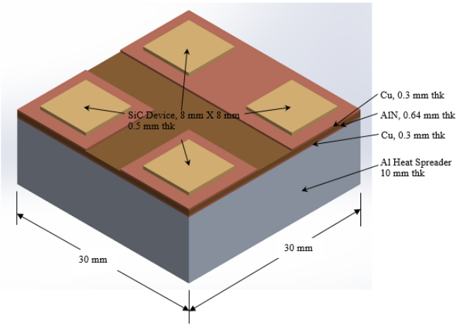
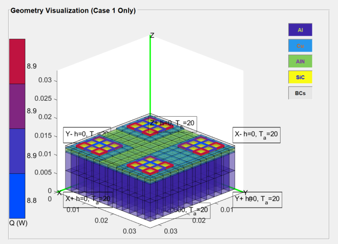
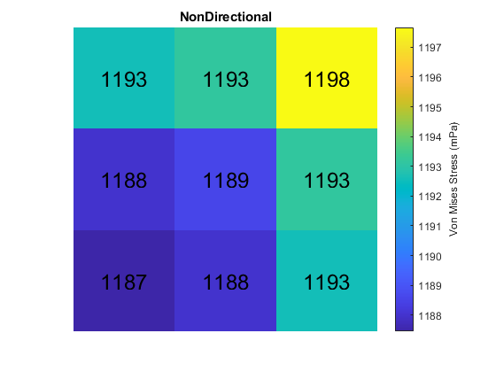

Validation of NonDirectional against iPACK19
Comparison of Von Mises stress in lower left device of planar geometry as described in the 2019 iPACK paper "Evaluation of Low Order Stress Models for Use in Co-Design Analysis of Electronics Packaging."
Contents
Workflow for extracting VM stress data from NonDirectional
- Construct planar geometry as described in iPACK19 (ipackmodel.ppresults)
- Run solver for temperature and melt fraction values
- Save PPResults object in GUI
- ParaPowerGUI(‘GetResults’).R;
- Use PPResults object as input for NonDirectional to get exact Von Mises stress values
Original Planar Geometry (iPACK19 fig. 1)

Input Geometry (recreated in ParaPowerGUI_V2)

% Nondirectional stress in lower left device, calculated by Stress_NoSubstrate3D_time.m mypath = genpath('C:\003_ParaPower\ParaPower\ARL_ParaPower\Stress_Models'); addpath(mypath) load('ipackobj.mat') [x y z vm] = Stress_NoSubstrate3D_time(ipack); vm_nondirec_orig = zeros(3); vm_nondirec_orig = vm(2:4,2:4,end,end); % rotate 90 degrees counterclockwise to match with iPACK19, mPa units vm_nondirec_rot = rot90(vm_nondirec_orig) * 10e-7; % iPACK19 stress in lower left device vm_paper = [1220 1220 1225; 1215 1215 1220; 1214 1215 1220]; % vm_nondirec = [1192.1 1192.6 1197.1; 1187.6 1188.1 1192.6; 1187.1 1187.6 1192.1];
iPACK19 stress (fig. 11-3)
clf imagesc(vm_nondirec_rot) % overlay NonDirectional stress data for k = 1:9 col = mod(k-1,3) + 1; row = floor((k-1)/3) + 1; text(row,col,sprintf('%.0f',vm_nondirec_rot(k)),'HorizontalAlignment','center','FontSize',18); end axis off title('NonDirectional') key2 = colorbar; key2.Label.String = 'Von Mises Stress (mPa)'; axis square % calculate percent error diff = abs(vm_paper - vm_nondirec_rot); error = diff ./ vm_paper; error_percent = error * 100; figure imagesc(error_percent) axis off key = colorbar; key.Label.String = 'Percent Error'; caxis([0 10]) title('Percent Error, iPACK19 vs. NonDirectional') axis square